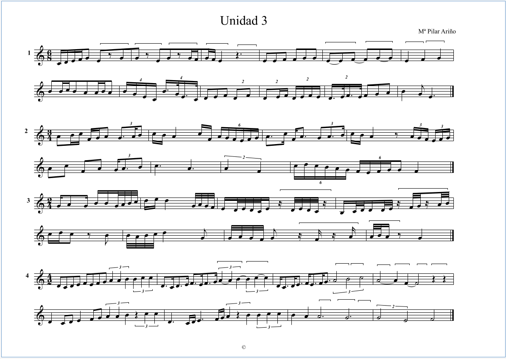
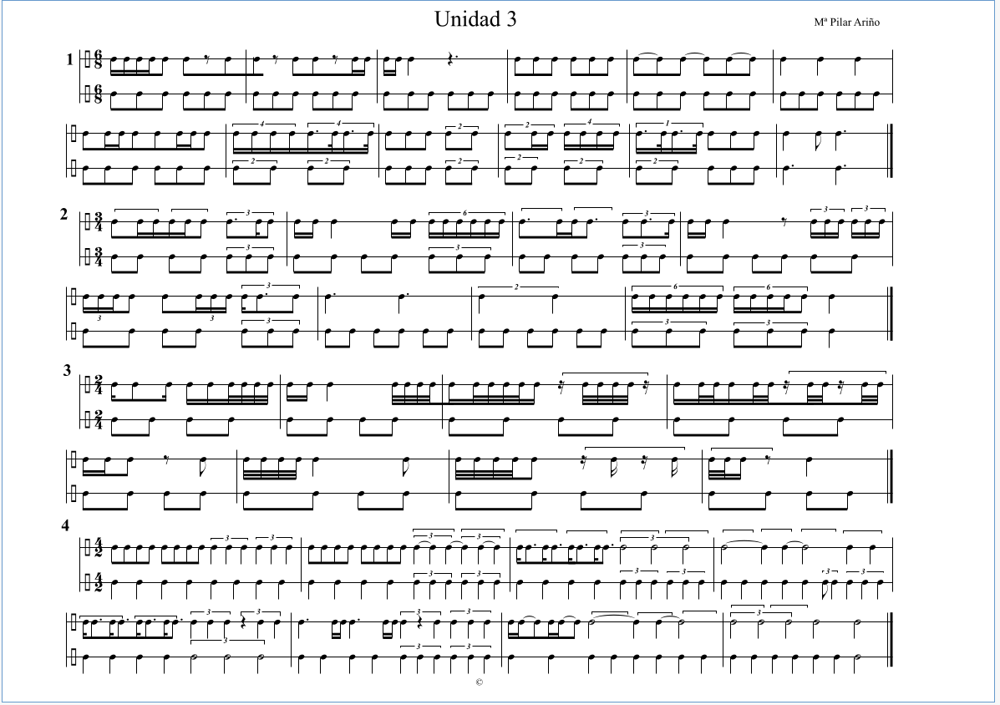

Semana 09 Curso 2022/2023
Profesora Pilar Ariño
Homework dated 18 November 2022
Table of Contents
- Realizar los dictados a dos voces (nº 1,2, 3,4, 5 y 6) que están en el aula virtual.
- Trabajar el ritmo 3 del aula virtual, primero percutido como hicimos en clase, percutir el ritmo principal por encima de la grabación así con el ejercicio 1, 2 y 3 del ritmo 3, el ejercicio 4 no lo grabamos, pero trabajarlo. (tenéis los audios en el aula virtual).
- Trabajar las melodías nº 3 y 4 del libro Para Cantar, vol 4.
Os mando dos enlaces de youtube, espero que os guste.
https://youtu.be/09RUuTAM2H0 y https://youtu.be/FZNqs0YgWkM
Dictado a 2 Voces
Dictado 1 y 2
Dictado 3 y 4
Dictado 5 y 6
Ritmo
Ritmo 3, cantando las notas

Figure 1: Ritmo 3, cantando las notas
Ejercicio 1

Figure 2: Ejercicio 1, grupo 2
Ejercicio 2
Ejercicio 3
Melodías
melodía 3
Libro para Cantar Nº 4
melodía 4
Libro para Cantar Nº 4